Prometheus + Grafana + Node
- Create a website with node
- Export personal metrics from the site to Prometheus
- Export also system metrics with Node Exporter
- Display metrics in Grafana
- Create alerts rules on specific metric
- Receive Slack notification when an alert is fired
- Redo everything with docker-compose
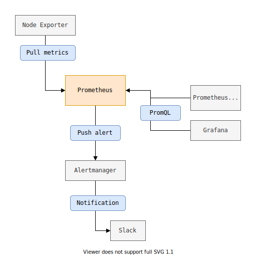
Install, setup and explore the project
Get the code from this github repository :
# download the code
$ git clone \
--depth 1 \
https://github.com/jeromedecoster/note-prometheus-grafana-node.git \
/tmp/note
# cd
$ cd /tmp/note
To setup the project, run the following command :
# install stress + docker pull prometheus + node-exporter + alertmanager + grafana ...
$ make setup
Configuring slack notifications
The project uses Slack notifications.
In my Slack account, I have two channels #my-channel and #another-channel.
They are configured to receive notifications with Incoming Webhooks :
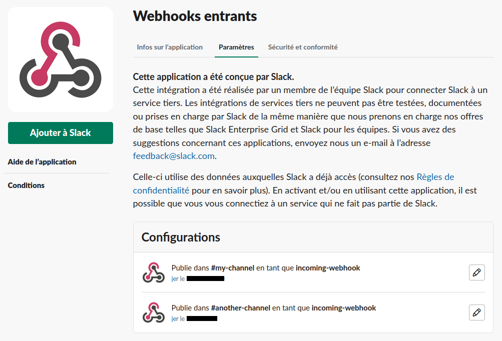
I search for the Webhook URLs of each channel :
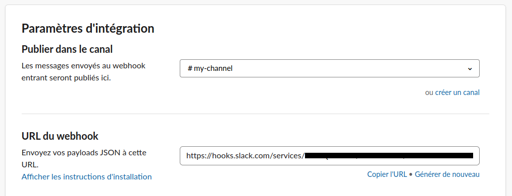
I modify my two files local-alert.yaml and compose-alert.yaml.
To replace api_url values with my Webhook URLs :
receivers:
- name: slack_default
slack_configs:
- api_url: 'https://hooks.slack.com/services/<CHANGE_URL_HERE>'
text: "{{ .CommonAnnotations.description }}"
icon_url: 'https://avatars3.githubusercontent.com/u/3380462'
The configuration is complete.
Exploring the website
The website uses the npm module prom-client.
The server uses 3 metrics :
- Counter : a counter is a cumulative metric that represents a single monotonically increasing counter whose value can only increase or be reset to zero on restart.
- Gauge : a gauge is a metric that represents a single numerical value that can arbitrarily go up and down.
- Histogram : a histogram samples observations (usually things like request durations or response sizes) and counts them in configurable buckets. It also provides a sum of all observed values.
const client = require('prom-client')
// ...
//
// Counter
//
const _counter = new client.Counter({
name: 'request_count',
help: 'Number of requests.'
})
app.get('/counter', (req, res) => {
_counter.inc()
res.send(`<b>${_counter.name}</b> increased`)
})
//
// Gauge
//
const _queue = new client.Gauge({
name: 'queue_size',
help: 'The size of the queue.'
})
app.get('/push', (req, res) => {
_queue.inc()
res.send(`<b>${_queue.name}</b> increased`)
})
app.get('/pop', (req, res) => {
_queue.dec()
res.send(`<b>${_queue.name}</b> decreased`)
})
//
// Histogram
//
const _histogram = new client.Histogram({
name: 'request_duration',
help: 'Time for HTTP request.',
// buckets: [1, 2, 5, 6, 10]
})
app.get('/wait', (req, res) => {
var max
var rnd = Math.random()
if (rnd < .4) { max = 1 }
else if (rnd < .8) { max = 3 }
else max = 10
const ms = Math.floor(Math.random() * max * 1000)
setTimeout(function () {
// convert to seconds
_histogram.observe(ms / 1000)
res.send(`<b>${_histogram.name}_bucket</b> filled.<br/>
<b>${_histogram.name}_sum</b> computed.<br/>
<b>${_histogram.name}_count</b> increased.<br/>
I kept you waiting for ${ms} ms!`)
}, ms)
})
// metrics endpoint
app.get('/metrics', (req, res) => {
res.set('Content-Type', client.register.contentType)
res.end(client.register.metrics())
})
Let’s start the website :
# local development (by calling npm script directly)
$ make dev
By opening the address http://localhost:5000 you can see this tiny website :
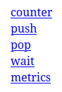
By displaying page counter we increase the request_count metric :
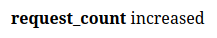
By displaying page push we increase the queue_size metric :
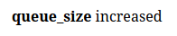
By displaying page pop we decrease the queue_size metric :
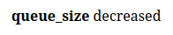
By displaying page wait we vary the request_duration_bucket, request_duration_sum and request_duration_count metrics :
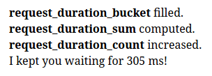
The page metrics display all the metrics :
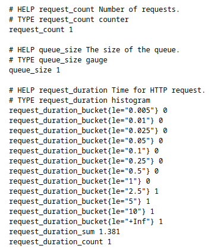
Prometheus
Let’s start Prometheus :
# run local prometheus
$ make local-prometheus
This command does this :
$ docker run --detach \
--name=prometheus \
--network host \
--volume $(pwd)/local-prometheus.yaml:/etc/prometheus/prometheus.yaml \
--volume $(pwd)/local-rules.yaml:/etc/prometheus/rules.yaml \
prom/prometheus \
--config.file=/etc/prometheus/prometheus.yaml
Prometheus is configured with the local-prometheus.yaml file :
scrape_configs:
- job_name: 'local'
scrape_interval: 10s
static_configs:
- targets:
- '0.0.0.0:5000'
- '0.0.0.0:9100'
alerting:
alertmanagers:
- static_configs:
- targets:
- '0.0.0.0:9093'
rule_files:
- '/etc/prometheus/rules.yaml'
Let’s detail this configuration :
- Prometheus will retrieve metrics from
0.0.0.0:5000, those emitted by our website in localhost. - Also retrieve metrics from
0.0.0.0:9100. These are the metrics emitted by Node Exporter that we will install later. - Use Alertmanager which listens on
port 9093and which we will install later. - Declare rules via the
rules.yamlfile.
Here is the content of the rules file :
groups:
- name: memory-rule
rules:
- record: node_cpu_seconds_total:avg
expr: (((count(count(node_cpu_seconds_total{job="local"}) by (cpu))) - avg(sum by (mode)(irate(node_cpu_seconds_total{mode='idle',job="local"}[1m])))) * 100) / count(count(node_cpu_seconds_total{job="local"}) by (cpu))
- alert: memory-warning
expr: node_cpu_seconds_total:avg > 45
labels:
severity: warning
annotations:
description: Memory warning {{ $value }} !
- alert: memory-critical
expr: node_cpu_seconds_total:avg > 80
labels:
severity: critical
annotations:
description: Memory critical {{ $value }} !
Let’s detail this configuration :
- We define the recording rules
node_cpu_seconds_total:avg - Recording rules allow you to precompute frequently needed or computationally expensive expressions and save their result as a new set of time series.
- The associated expression
exprcalculates the CPU usage - We define 2 alerting rules which will be triggered if
node_cpu_seconds_total:avg > 45or ifnode_cpu_seconds_total:avg > 80
Prometheus is launched. We can see the rules by opening http://localhost:9090/rules :
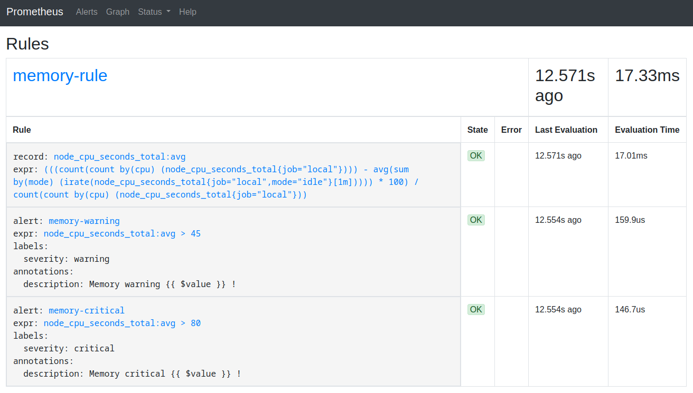
We can see the alerts by opening http://localhost:9090/alerts :
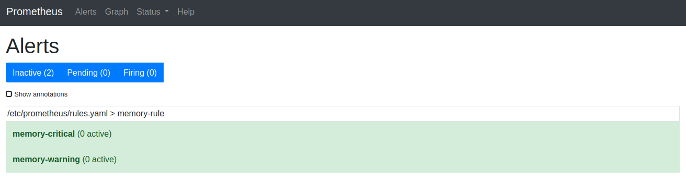
We can now use Prometheus to display our metrics.
The URL http://localhost:9090/graph?g0.range_input=5m&g0.expr=queue_size&g0.tab=0 displays the evolution of the queue_size metric that we have varied via our website by visiting push and pop pages :
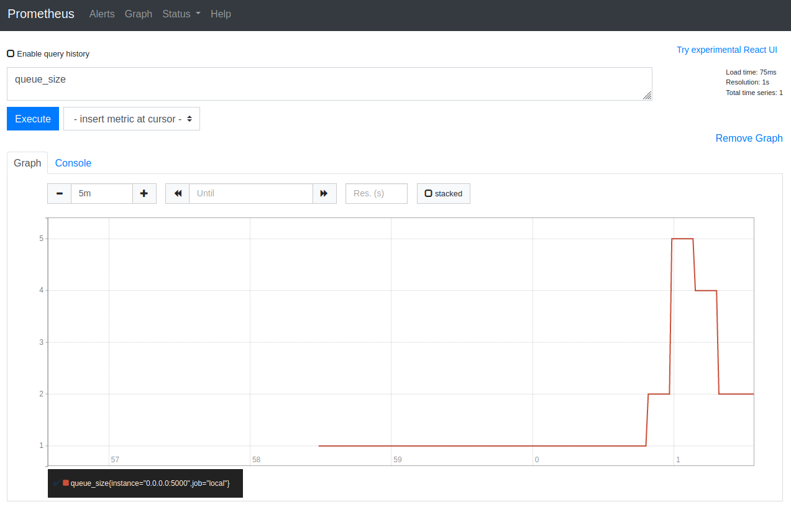
node-exporter
We install Node Exporter :
# run local node-exporter
$ make local-node-exporter
This command does this :
$ docker run --detach \
--name node-exporter \
--restart=always \
--network host \
prom/node-exporter
Once installed, the metrics are available at the address http://localhost:9100/metrics :
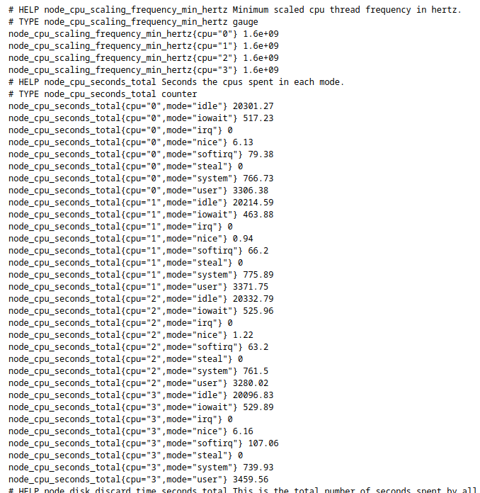
Now all these new metrics are available in Prometheus :
The URL http://localhost:9090/graph?g0.range_input=5m&g0.expr=node_cpu_seconds_total&g0.tab=1 displays the evolution of the node_cpu_seconds_total metric :
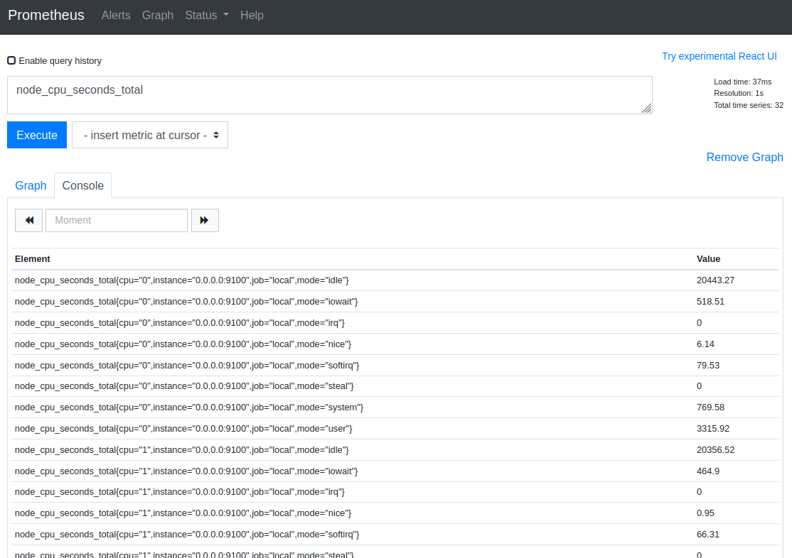
Installing Alertmanager
Let’s install Alertmanager
# run local alertmanager
$ make local-alertmanager
This command does this :
$ docker run --detach \
--name=alertmanager \
--network host \
--volume $(pwd)/local-alert.yaml:/etc/alertmanager/local-alert.yaml \
prom/alertmanager \
--config.file=/etc/alertmanager/local-alert.yaml
Once installed, the Alertmanager is available at the address http://localhost:9093 :
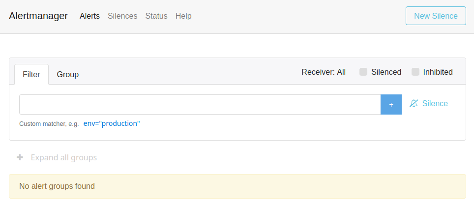
Stress test
We will trigger an alert by stressing our CPU with the stress executable :
# hot !
$ stress --cpu 2
The URL http://localhost:9090/graph?g0.range_input=1h&g0.expr=node_cpu_seconds_total%3Aavg&g0.tab=0 displays the evolution of our custom metric node_cpu_seconds_total:avg :
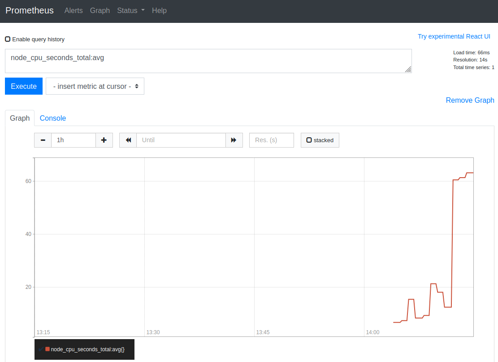
We see that 45% of CPU usage is exceeded, an alert is triggered and displayed in Alertmanager :
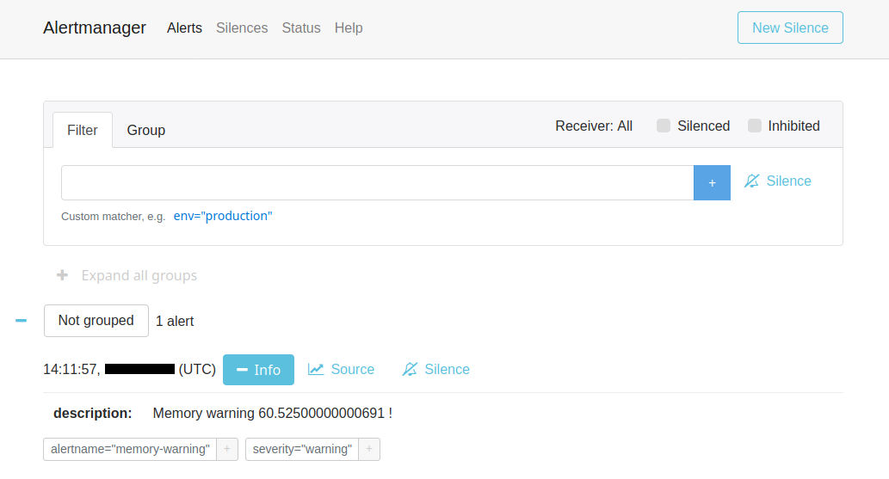
You can see this alert triggered also in the Prometheus interface :
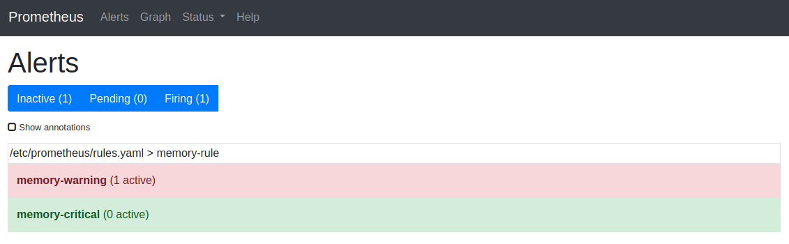
And our Slack channel has been notified :
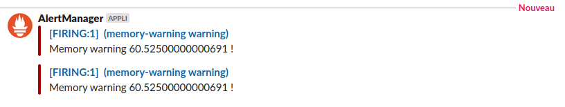
Installing Grafana
Grafana allows us to display this data in the form of a pretty dashboard.
Let’s start Grafana :
$ make local-grafana
This command does this :
$ docker run --detach \
--env GF_AUTH_BASIC_ENABLED=false \
--env GF_AUTH_ANONYMOUS_ENABLED=true \
--env GF_AUTH_ANONYMOUS_ORG_ROLE=Admin \
--name=grafana \
--network host \
grafana/grafana
After a few seconds of initialization, Grafana is visible at the address :
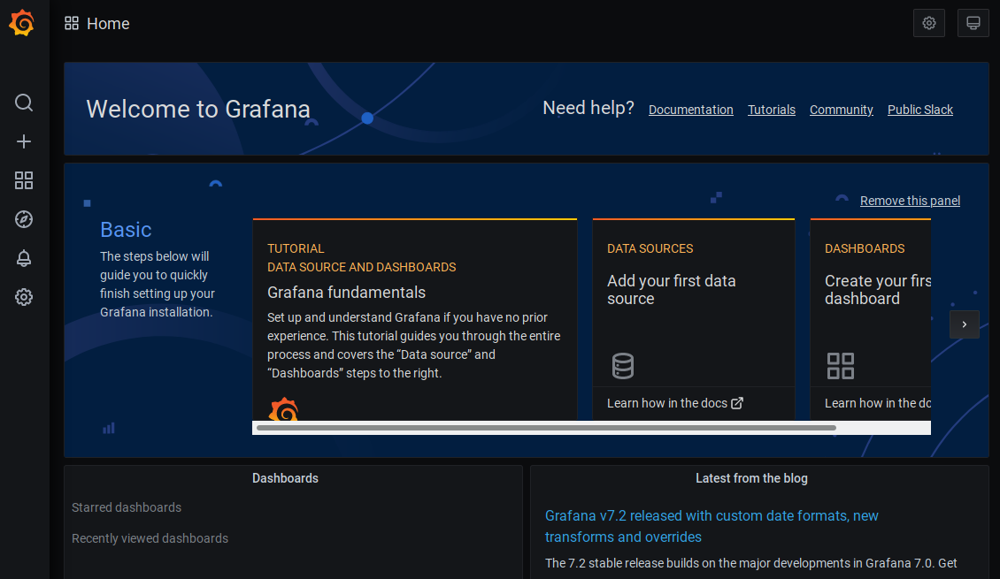
Grafana however still needs to be configured :
- First, add a datasource
- Then add a dashboard
We can configure it with this command:
$ make local-grafana-configure
This command adds Promotheus as a datasource like this :
$ curl http://localhost:3000/api/datasources \
--header 'Content-Type: application/json' \
--data @local-datasource.json
The local-datasource.json file is simple :
{
"name": "Prometheus",
"type": "prometheus",
"access": "proxy",
"url": "http://localhost:9090",
"basicAuth": false,
"isDefault": true
}
This command then installs a dashboard specially designed to retrieve data from Node Exporter.
The command retrieves the dashboard from this JSON data : https://grafana.com/api/dashboards/1860.
# create dashboard-1860.json
$ curl https://grafana.com/api/dashboards/1860 | jq '.json' > dashboard-1860.json
To be able to be imported into Grafana, we need to modify our JSON by wrapping it like this :
# wrap some JSON data
$ ( echo '{ "overwrite": true, "dashboard" :'; \
cat dashboard-1860.json; \
echo '}' ) \
| jq \
> dashboard-1860-modified.json
We now add it to Grafana :
# add dashboard-1860-modified
$ curl http://localhost:3000/api/dashboards/db \
--header 'Content-Type: application/json' \
--data @dashboard-1860-modified.json
Another dashboard specific to the metrics of our website is added.
We reload our browser, we see that the dashboards have been added :
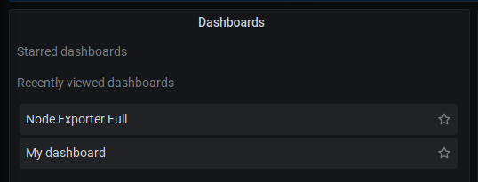
We display the Node Exporter Full dashboard :
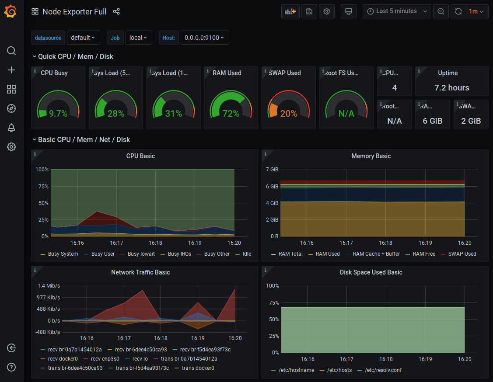
We display the My dashboard dashboard :
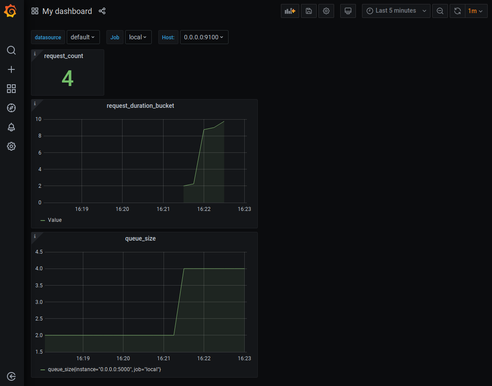
A new stress test
We are going to stress our CPU again. This time a little stronger :
$ stress --cpu 3
We see that 80% of the CPU usage is exceeded :
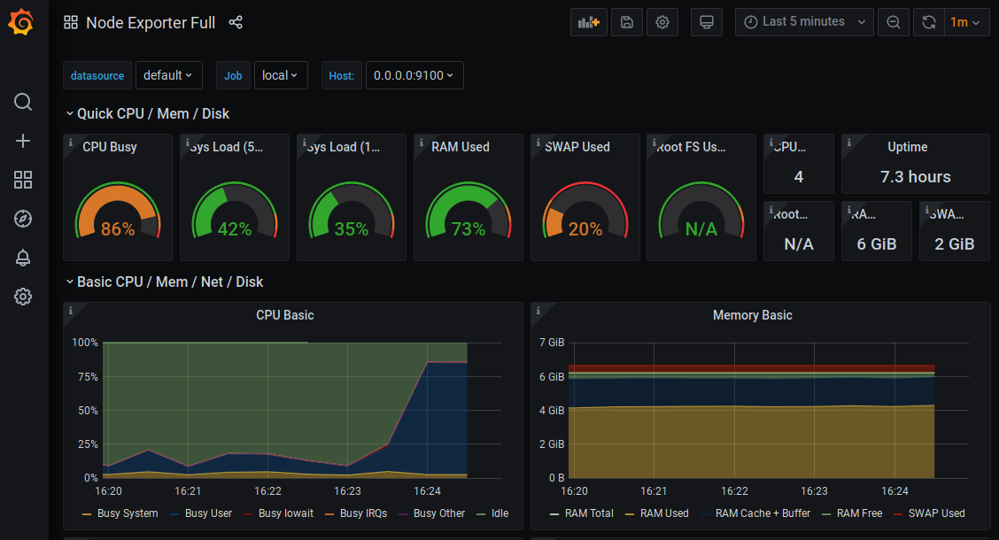
Our 2 alerts are triggered and displayed in Alertmanager :
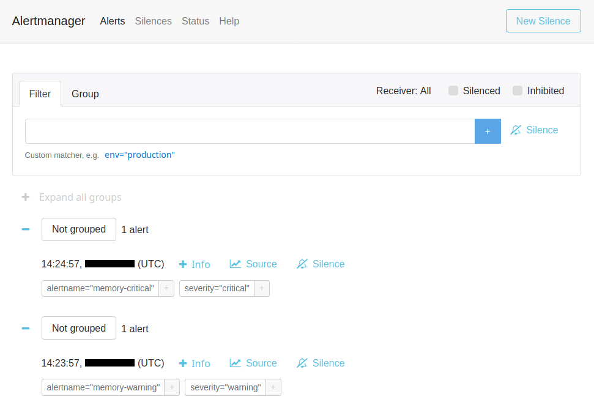
We can also see our alerts triggered in the Prometheus interface :
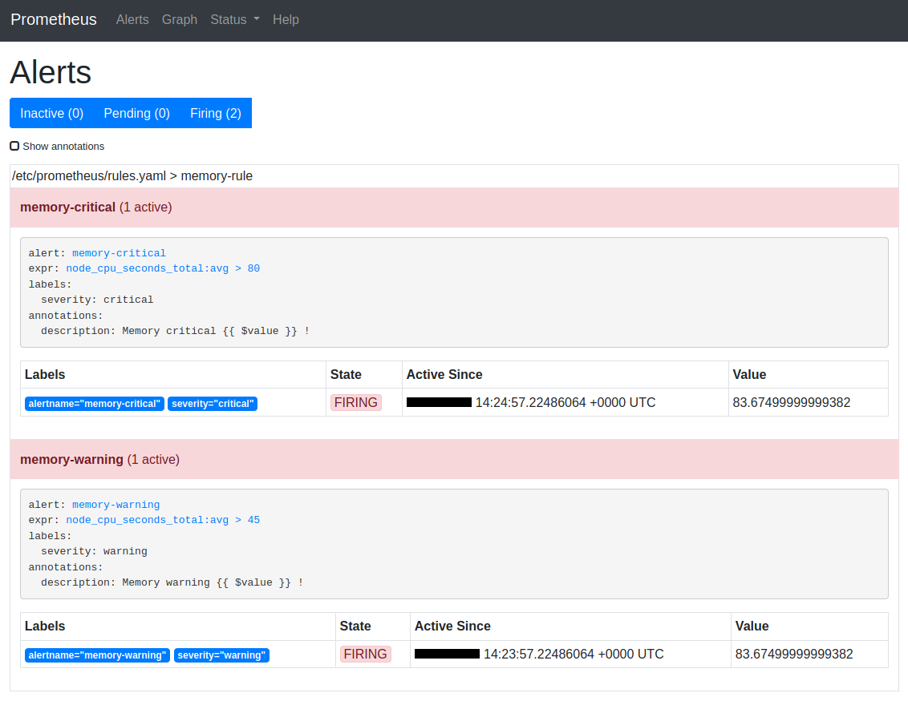
The #my-channel slack channel has received the warning notification :
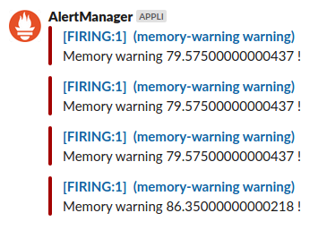
The #another-channel slack channel has received the critical notification :
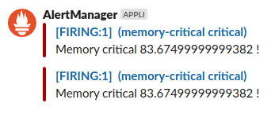
Our tests are now complete, we can remove the running containers :
# remove all running containers
$ make rm
Using Docker-compose
The goal is to set up a similar environment using docker-compose.
One command is enough :
# docker-compose up
$ make compose-up
It is interesting to go and see the configuration files.
The docker-compose.yaml file :
version: "3"
services:
site:
build:
context: ./site
container_name: site
ports:
- "5000:5000"
node-exporter:
container_name: node-exporter
image: prom/node-exporter
ports:
- "9100:9100"
alertmanager:
container_name: alertmanager
image: prom/alertmanager
ports:
- "9093:9093"
command: --config.file=/etc/alertmanager/compose-alert.yaml
volumes:
- ./compose-alert.yaml:/etc/alertmanager/compose-alert.yaml
prometheus:
container_name: prometheus
image: prom/prometheus
ports:
- "9090:9090"
command: --config.file=/etc/prometheus/prometheus.yaml
volumes:
- ./compose-prometheus.yaml:/etc/prometheus/prometheus.yaml
- ./compose-rules.yaml:/etc/prometheus/rules.yaml
grafana:
container_name: grafana
image: grafana/grafana
ports:
- "3000:3000"
environment:
- GF_AUTH_BASIC_ENABLED=false
- GF_AUTH_ANONYMOUS_ENABLED=true
- GF_AUTH_ANONYMOUS_ORG_ROLE=Admin
grafana-setup:
container_name: grafana-setup
image: alpine:3.10
depends_on:
- grafana
volumes:
- ./compose-datasource.json:/etc/grafana/compose-datasource.json
- ./compose-dashboard.json:/etc/grafana/compose-dashboard.json
- ./compose-my-dashboard.json:/etc/grafana/compose-my-dashboard.json
command: >
/bin/sh -c "
apk add --no-cache curl
echo 'waiting for grafana'
sleep 7s
cd /etc/grafana/
curl http://grafana:3000/api/datasources \
--header 'Content-Type: application/json' \
--data @compose-datasource.json
curl http://grafana:3000/api/dashboards/db \
--header 'Content-Type: application/json' \
--data @compose-dashboard.json
curl http://grafana:3000/api/dashboards/db \
--header 'Content-Type: application/json' \
--data @compose-my-dashboard.json"
Note how the Promotheus configuration has been modified :
scrape_configs:
- job_name: 'compose'
scrape_interval: 5s
static_configs:
- targets:
- 'site:5000'
- 'node-exporter:9100'
rule_files:
- '/etc/prometheus/rules.yaml'
alerting:
alertmanagers:
- static_configs:
- targets:
- 'alertmanager:9093'